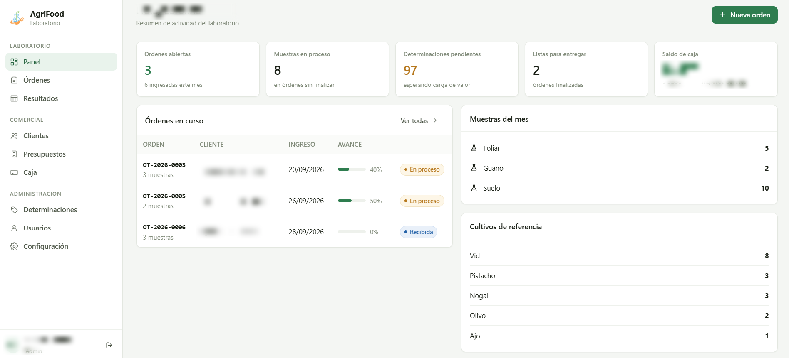

InicioHome / ProyectosProjects / AgriFood
Sistema de gestión del laboratorio AgriFoodAgriFood lab management system
Un solo lugar para que el laboratorio reciba muestras, cargue resultados y lleve la parte administrativa, en vez de planillas sueltas.
One place for the lab to receive samples, enter results and handle the admin side, instead of scattered spreadsheets.

- ClienteClientLaboratorio AgriFood · análisis de suelo y foliarAgriFood lab · soil and leaf analysis
- Mi rolMy roleDesarrollo completo, servidor y puesta en producción, desde HiletsConnect.Full development, server and deployment, through HiletsConnect.
- StackNode.js · SQLite · JavaScript (ES modules) · HTML/CSS · Linux · systemd · Proxmox
Qué haceWhat it does
- Órdenes de trabajo con varias muestras cada una y carga de resultados en formato planilla.
- Catálogo de determinaciones con código, unidad, método y precio, con ajuste masivo de precios y paquetes sugeridos.
- Escalas de interpretación por colores para cada determinación, con editor y vista previa en vivo.
- Tipos de muestra configurables (suelo, foliar, agua de riego, compost…).
- Clientes, presupuestos y caja.
- Roles: administración, recepción y analistas, cada uno con sus permisos.
- Scripts para importar los datos que el laboratorio ya tenía en planillas.
- Work orders with multiple samples each and spreadsheet-style result entry.
- Test catalogue with code, unit, method and price, bulk price updates and suggested bundles.
- Color-coded interpretation scales for each test, with an editor and live preview.
- Configurable sample types (soil, leaf, irrigation water, compost…).
- Clients, quotes and billing.
- Roles: admin, front desk and analysts, each with their own permissions.
- Scripts to import the data the lab already had in spreadsheets.
Cómo está hechoHow it's built
Lo hice con Node y SQLite sin ninguna dependencia externa: el servidor usa solo módulos nativos y el frontend son módulos de JavaScript que el navegador carga directo, sin compilación. La idea fue que sea simple de mantener a largo plazo: se edita un archivo, se reinicia el servicio y listo.
Las contraseñas se guardan con scrypt y sal por usuario. El sistema corre en su propio contenedor en mi servidor Proxmox, como servicio que arranca solo, con copias de seguridad automáticas de la base de datos.
I built it with Node and SQLite and zero external dependencies: the server uses only built-in modules and the frontend is plain JavaScript modules the browser loads directly, with no build step. The goal was to keep it easy to maintain long-term: edit a file, restart the service, done.
Passwords are stored with scrypt and a per-user salt. The system runs in its own container on my Proxmox server as a service that starts on boot, with automatic database backups.
GaleríaGallery